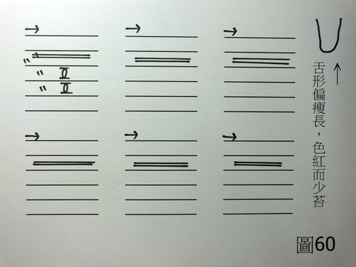

兵棋推演 4：趙敏咳嗽不癒
作者：陳建元
〈圖60〉：
假設條件：趙敏女22歲左右45公斤左右，主述是前一陣子有感冒，到現在已經好的差不多了，但是遺留一個咳嗽不會好，咳嗽的頻率還好，無痰、乾咳。

〈以下用科中，一日四次。即早餐後服用一次，中餐後服用一次，晚餐後服用一次，睡前再服用一次。〉
荊芥 3 鬱金 1 陳皮 1 桔梗 1
桃仁 1 沙參 2 生地 1 枸杞子 1
〈依上述比例混合之後，每次服用5克，一日四次。〉
【思路探索】：
1. 可以導致咳嗽的病候與因素很多，而乾咳也未必只有「燥咳」一種而已，要從脈候上去詳查，才能知道問題點出在哪裡。
2. 舌形偏瘦長、色紅而少苔，配上諸脈浮直弦數而偏細，可以知道素體是陰虛體質。
3. 肺脈第2層特別弦緊，可以知道尚有外感餘邪（風寒），而肺脈的第2、3、4層皆出現澀脈，配合上乾咳，這是一種內傷咳嗽【內傷咳嗽的特徵也是乾咳，常見於運動之後立刻飲用大量冰水或是沒有做緩和運動所導致，乃是一種「胸部瘀滯、停瘀」所導致的病理現象，台語叫做「煞到」，可參考 武術雜論 8. 武術運動中的附帶獎品───運動傷害 】，所以整個合起來看，乃是內傷咳 + 外感餘邪，兩者相合邪所導致的乾咳。
4. 故用荊芥除去肺系的外感餘邪；鬱金、陳皮、桔梗、桃仁對肺系理氣活血；諸脈畢竟有陰虛的素質夾雜在內，故稍用沙參、生地、枸杞子補益諸脈的陰虛，以佐助上述藥物的運藥。
【引用請先來信告知徵求同意，若有涉及販售營利等商業行為，版權所有拷貝盜用必究。】
【藥王脈學講壇】http://blog.xuite.net/drjychen/twblog